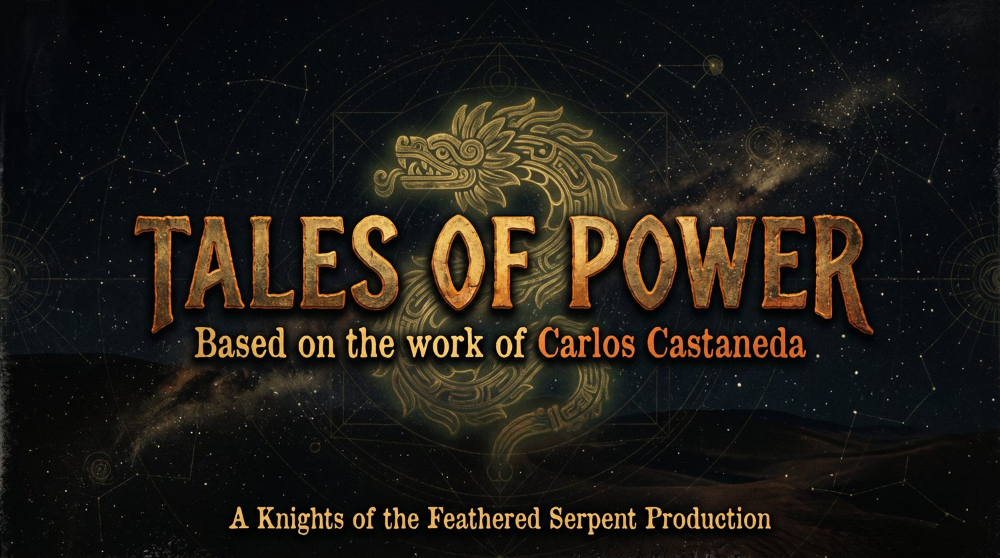

Warrior Path
Teachings
Essays from the edge of the known world.
Short studies for seekers, artists, and warriors learning to act with attention.
Stalking
The Strategy of Freedom
The self as pattern, mask, memory, and movable assemblage. Buy BookDreaming
The Gate of Silence
Attention beyond the ordinary inventory of the world. Buy BookHeart
The Only True Measure
Why power without heart becomes another form of sleep. Buy Book
Future series
Tales of Power
A natural companion channel for film essays, narrated teachings, visual meditations, and short-form explorations based on the mythic atmosphere of the work.
Discuss the series